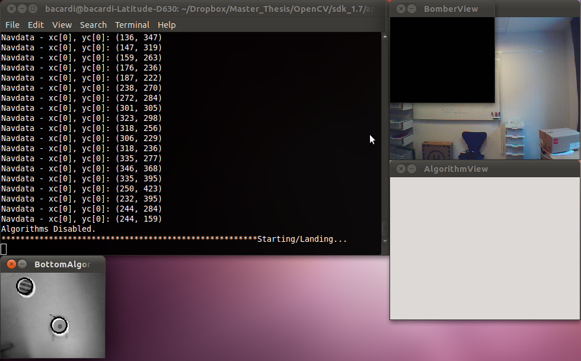

Monthly Archives: June 2011
Drone: new PID with polar coordinates and HowTo improve reactivity and accuracy
| June 26, 2011 | Posted by Michael under Drone, Ideas, Issues, Programming, Refining the project |
Comments off
|
Handling polar coordinates for the PID
Defining a new error
Previously1, we have seen how to manage a fair tracking with a PID control loop that uses a traditional Cartesian coordinates system. Picturing its idea seemed however rather less intuitive than by considering polar coordinates.
We are indeed considering a central point and an offset between it and the position of the roundel. The goal of the PID is to make them be about the same. Therefore, we can simply consider that the distance between the middle of our plan and the roundel is a radius, and an angle is formed by the abscissae axis and this radius (look at the figure below to picture the situation).
{kind=link}
With using the radius as the only error parameter, a PID controller can be implemented. In such a representation of the system, what does really matter is for the radius to be as close to zero as possible. Having a different angle does not make any difference in measuring the angle: it is as wrong to be at a 3Pi/4 angle as at a -Pi/2 angle (as long as the radius is the same in both cases). The correction applied to the motors will be the same in intensity, and power applied is what is really at stakes while dealing with this kind of system. The angle will serve the only purpose of telling to the motors in what direction they have to rotate in order to move the drone in the right direction – no PID is necessary for that. Our PID is rather here to tell how fast the drone has to move in that direction.
Changing the code
It appears then more natural and even easier to handle one radius parameter instead of the old two x and y error parameters – one for each axis. This change required yet a few tweaks in the code that had to be tested independently:
- image analysis returns Cartesian coordinates for roundel position. A switch from Cartesian coordinates to polar ones has to be done. The maths behind this change are straightforward:
{kind=link}
- before doing so, it might be nice to perform an axial symmetry using the x-axis, in order to get a more intuitive picture of the plan. Here is the call to the function changing the coordinates – the symmetry is done while passing parameters:
convertToPolarCoordinates(xval - XMIDDLE, -(yval - YMIDDLE), &radius, &theta); //XMIDDLE is the x-value for which the image is equally split in two parts (same goes with YMIDDLE and the y-axis)
- creating a new function for the drone is necessary: it has to be possible to tell it to go in a defined direction, at a given speed. Since the API can only handle orders on two Cartesian axis, to pitch and roll (not mentioning yaw to turn and gaz to change altitude), some basic conversion (converting a movement on one axis to a movement on two perpendicular axis) has also to be taken care of here.
{kind=link}
The core of the algorithm kept unchanged: we merely apply a PID control loop that take the radius as an error parameter that should be close to zero. The results were therefore as good as the previous one (not better). A simpler Proportional Derivative (PD) is being considered, insofar as the Integral term main purpose is to help remove small errors to help being exactly on top of the target, which is not essential for us, as long as the drone does not describe huge circles around it. We will go back later on this precise matter.
Responsiveness tests: which detection is really efficient ?
A need for faster loops
We recently introduced image analysis to deal with tag detection on the PC side. This was done with the idea of taking advantage of a greater computing power and the possibility to choose the kind of tag we want to track – hence getting ride of the limitation induced by the drone firmware. We have experimented that our detection roughly provided the same results, even better on average than the one given by the drone.
Well, this conclusion proved to be partly right. We were indeed a little more efficient than the embedded program in terms of frames received and analyzed: for a new frame received by the computer, our OpenCV algorithm performs a little better than the one embedded on the drone for the same frame. Since the PC sends orders to the drone only when a new frame was received, no matter if we are considering the OpenCV analysis or the embedded one, the PID results were almost the same.
The problem lies in the fact that the computer does not received all the frames got by the 60 fps vertical camera. Whereas this is due to a loss of data happening during the WiFi communication, a problem of bandwidth, or a slow processing time of new frames on the drone or computer side, we don’t really know. Since we have no access to the drone’s firmware yet, we cannot do anything about it. Anyway, our loop were therefore quite slow, running at an average speed of 62ms, meaning less than 10 frames per second (without image analysis, which would decrease again this speed). So as much new orders per second sent to the drone. And this is without taking into account some big slowdown on the computer side, entailing in delays of sometimes more than a second. Which is huge while considering such a reactive system: if the power applied to the motors at a given time is someway high due to a PID correction, a delay even as small as 3/4 of a second can have the drone overshoot its target so it will lose it for good.
Experiments
To see how much useful data were lost and hence unanalysable by our algorithm, we kept running our OpenCV image analysis and the embedded roundel recognition at the same time, comparing the number of matches. However, the waiting time we used to have in each loop was deleted, so the program could run a new iteration even if the frame received was still the same. Because not getting any new frame does not mean not getting new navigation data, the program had then access to those navigation data send by the drone faster. And among those navigation data are kept the coordinates of tags detected by the algorithm embedded on the drone.
The next figure pictures the experiment process in a chart. Note: the results would have been even more obvious if we were to split the OpenCV analysis and the navdata handling in two different threads.
{kind=link}
The results are listed in the graph below. On average, the embedded algorithm records 1.45 times more different coordinates of the ground tag than the OpenCV algorithm running on the computer.

Our recent discoveries with the speed acquisition of navigation made us test it without any video display on our computer, not to mention video analysis. Our running loop went therefore faster, multiplying its speed by about 300 times. Even if it does not multiply the navigation data like this, we still receive some more, and are sure to get all of them, without losing them while the image analysis is being processed.
Conclusion
Gained responsiveness
The main comment that can be done about those results is that the embedded detection is obviously much more efficient (about 45% more) once we consider all the useful frames. And the reason for that is that the drone has more frame at its disposal on which it can run the analysis than the WiFi connected computer. The actual drone’s navigation data keep changing even while no new frame is received, which confirms that some frames are lost in the process (otherwise coordinates sent by the drone would come at the same pace than those got by our OpenCV algorithm). Add this to the fact that the image is converted from raw data to an actual image that can be displayed on the computer’s screen during the transmission process, and you can start having a better idea of the benefits in dealing with algorithms on board rather than with a second device, no matter how powerful it is.
One path we could follow in order to get improved results without changing our way of doing things lies in using the newly release ARDrone’s firmware, that allegedly improves the video decoding time process thanks to an other codec. The problem is that this firmware does not seem stable enough at the moment, and it really messes things up with our code.
We could however implement the image analysis in a separate thread, without slowing down the PID algorithm. Since we will gain speed in receiving navigation data as we saw it, we might want to not check twice the same package (i.e. filtering data), and therefore send only once the same order to the drone, so as to avoid jamming the bandwidth.
What to do with those performance conclusions ?
One legitimate question one may ask is whether we really need all those frames for fulfilling our tracking purpose. Our early tests showed us a much more responsive and accurate drone, that kept its target in sight longer. The PID (or PD at least) needs to be tuned again, since the drone has still a tendency to wander around the roundel, and not hover perfectly on top of it.
As for our flock of robot tracking purpose, we may have now a major issue. We will need to do image analysis to detect different robots while following them at the same time. But since we actually need to be quickly responsive for the task that helps follow the leader, we can contemplate doing the following:
- use the really efficient embedded detection for hovering on top of the leader.
- take advantage of our own OpenCV image analysis in a separate, slower thread, for reporting coordinates and orientation of the other robots in the flock. We do not need a speed as high as for the hovering task to do so, so it should be just fine for keeping the formation on the ground.
- since we plan one being able to change our leader at any time, and tags recognized by the drone are limited, we will have to use whatever is made available by the engineers at Parrot. For the moment, roundels, oriented roundels and stripes of different colors can be tracked. This should be just enough for our task.
This can all be summed up in the chart below.
{kind=link}
References
- As stated in a former article : http://www.ludep.com/performing-simple-image-analysis-and-full-pid-controller-with-the-drone/ [↩]
Some steps further with the omnidirectional robot
| June 20, 2011 | Posted by Guillaume under Ground robots, Ideas, Issues, Programming, Refining the project, Testing |
Comments off
|
In this article, we’ll focus on the driving behavior of the robot. Indeed, we need it to be as accurate as possible in every of his moves and we need it to be able to go in every direction. So we’ll explain here how the robot is supposed to move without turning and how we implemented the movement system accordingly.
How can we get rid of the rotation ?
Mathematical point of view or how to “mettre les mains dans le cambouis”
Basically, the kiwi drive is just a point on which we apply three different rotations. The question is “how should we settle the rotations (i.e. power applied to the motors) so as to ensure a translation instead of a clumsy rotation”.
If we use the complex notation for planar geometry, a rotation would be in the form of the following equation, with being the image of by the rotation of center and angle θ.
{kind=link}
If we compose two rotations, we’ll get the following equation
{kind=link}
We put this equation (4) in that special form so as to show that if we have θ + θ ‘ = 0, the first exponential term is equal to one and thus we obtain z ‘ ‘ = z + a ; which is the formula of a translation in complex notation. We can see that the composition of two rotations is a translation as long as the sum of the rotation angles is equal to zero. This is very understandable; indeed if we compose two opposite rotations we have a translation, as everybody who has already driven a car may have noticed… The problem is that we compose three rotations for the kiwi drive: do we get the same result? Well, let’s just look at that.
{kind=link}
Once more with (6), we can see that θ + θ ‘+ θ ‘ ‘ = 0 induces a translation. This could have been easily anticipated knowing that planar rotations form a group (mathematically speaking; namely that a composition of two rotation is either a rotation or a translation) and therefore, our result for two rotations would be expandable for three. At this point we knew that keeping this sum equal to zero was primary in order to ensure the reliability of the kiwi drive and that corrections like PID would be a major and powerful tool to use.
Physical point of view or how to prevent and correct errors
If the physics could stick to the mathematical theory, well first we would not be forced to make obscures approximations and inconvenient assumptions but in our case, our robot would never turn on itself if we respect the condition “the sum of the rotations must be equal to zero”. Unfortunately due to imperfection purpose (robot construction not 100% robust, friction, measurement errors, etc), we’re forced to face the case that the robot might and will change its orientation within the time. In order to counteract this issue, we came out with a simple system. We’ve implemented a thread running all the time (but can still disabled for testing or manual driving purpose) which samples the motors position thanks to the method Motor.MOTOR_PORT.getTachoCount(): and if the sum of every motor is different to the reference it should have, we command the robot to make a gentle counter rotation.
Here is some code in which you can see the way we counter the rotation using a PI correction (soon to be PID or PD, according to the result obtained we’ll have with our new omniwheels):
while(isInRegulation()){
noRotInt += noRot; // Integral term
noRot = ref - getMotorTachoCountSum(); // Proportional Term
corRot = noRot*getCm().getFactorP() + noRotInt*getCm().getFactorI(); // PI Correction
getCm().setRotationPower(corRot); // Apply counter rotation
getCm().refreshMotors(); // Apply new powers to motors
}
public int getMotorTachoCountSum(){
return Motor.A.getTachoCount() + Motor.B.getTachoCount() + Motor.C.getTachoCount();
}
How do we make the robot move ?
The first thing we wanted the robot to do was to go in a direction within a certain range. Then we implemented a Cartesian referential (so as to be more convenient for the flock behavior implementation later) simply by changing the base. So for the implementation, we had to ask ourselves:
- what is the power to give to each motor so as to respect the condition “the sum of every rotation angle must be equal to zero”;
- when and how the robot should stop;
- how to interpret several commands (stack or “last command prevails” behavior).
In order to do deal with the powers, we knew that for any movement, each motor has to rotate different amount of degrees (in the major part of all the cases) in the same amount of time. Thus, motors’ power had to be different without making the robot rotate on itself. At this point, we tried to apply powers to each motors with the sum of powers equals to zero. And the results went better than expected because it was working pretty well. We had to take care of the low powers (because the robot wasn’t moving that much between 0 and 20) simply by applying a scale factor.
So as to be functional, every motor has to rotate a certain amount of degree (we’ll say that the motor A has to rotate a degrees, b degrees for B and c degrees for C) and respect a+b+c=0 (we write “0” in order to be coherent with our reasoning but in reality, it’s equal to the very first value sampled by getMotorTachoCountSum() written above). The point of this equation is that it has to be true at every moment of the movement. So we made a graph that shows the percentage of progress of each motor, without correction in order to picture how accurate the system could be.
| Percentage of progress of each motor over a movement of 2 meters with no correction. The motors are however regulating themselves with the method Motor.MOTOR_PORT.regulateSpeed(true) |
|---|
{kind=link}
Showing this graph was important in order to jump over the second question, which tends to find out how to stop the robot. The first and naive way would be to stop the movement as soon as the three motors completed their movements, i.e. when the line (letting the first two one continuing rotating till the last one ends). Problem is, when one of the motors is under very low-speed, he may never complete his rotation or complete it instantaneously. So waiting for three motors led to infinite movement, waiting for one led to premature stops and waiting for two was just perfect because in any movement, the robot is supposed to use two motors with reasonable (>20) powers.
Concerning the commands behavior, we had to adopt a fusion of “last command prevails” and the stack behavior so as to be able to merge autonomous and manual movements.
Testing the robot
Here is two videos about the robot making a rectangle (simple succession of four commands) without and with PI correction.
| Without correction | With PI correction |
|---|
As you can see, the system is quite more accurate with the PI correction. Nonetheless, it is still not reliable and does not fit our project requirements. We’ve been trying to tune the PI (/PID) and obtained more or less satisfying results but still not that acceptable. But we got a very nice surprise at the end of the last week: we received the Rotacaster omniwheels and tried it. We don’t want to spoil the next article, but the accuracy should not be a major issue from now on. We’re still delivering a picture of the measurement for the errors in order to give you an idea of the impact of the correction (knowing that the robot is supposed to make a square of side sqrt(2), so more than 7 meters).
{kind=link}
Performing simple image analysis and full PID controller with the Drone
| June 10, 2011 | Posted by Michael under Drone, Issues, Programming, Testing |
Comments off
|
So far, we have been able to detect roundels on the floor with the drone by using an already existing embedded function. We have even managed to conceive a basic proportional controller (P) on the drone to track the detected roundel. Now, we have added more flexibility by using our own detection algorithm to track our own patterns freely, on top of having greatly improved our tracking control loop with a full Proportional, Derivative, Integrative (PID) control. Altitude is also managed by a simpler PI control.
Detecting circles with OpenCV
Why image analysis ?
The algorithm for roundel detection developed by the engineers at Parrot was working well for achieving its immediate purpose, but this was not satisfying for us in many ways:
- We have no control over its implementation. Since it is embedded on the drone firmware and we don’t have access to it, we are not able to change even a small part of it. Moreover, this function may disappear at any time in later firmware updates.
- We cannot decide the shape it recognizes. This is especially annoying for us, since we would like to detect different robots and identify them as such, preferably with an orientation (the pre-existing function can detect the direction of a stripped roundel, but not its orientation).
- Doing the image analysis on a separate computer provides us with more computing power than what is possible with the drone alone. Thus we may theoretically achieve a more efficient pattern recognition. We stay however careful about this assumption, since the delay induced by the WiFi communication and the other navigation data transfer may counterbalance this positive effect. Plus, we are beginners with OpenCV image analysis in real-time.
Starting with OpenCV
OpenCV seemed to be the natural way of doing our own video analysis: it is open source, greatly supported by developers and big companies such as Intel, the library has more than 500 optimized algorithms that do not need to be reinvented, it has been primarily developed for a C++ use, and so on.
To first get accustomed with OpenCV and video analysis, we decided to replicate what the algorithm we have used until now is able to do. And for that matter, since we work for the moment in an environment we know, that the drone and robots are probing, we kept things simple by just detecting circles on the video stream. Our floor is indeed perfectly flat and made of only one color, without any pattern. An efficient algorithm to perform that is explained by Robert Laganière in one of his books1.
Basically, for each new frame send by the drone to the computer, we apply a Gaussian blur filter to smooth the image and avoid detecting false circles because of the noise. We then use a Canny detection2 and a Hough transform3 that are regrouped in one function call, that need to have a one channel image as an input. That is why we need to first convert the color frame into an image represented by shades of gray:
cv::GaussianBlur(bottomMat, bottomMat, cv::Size(5,5),1.5); //bottomMat is the matrix of the frame we analyse cv::cvtColor(bottomMat, bottomMatDraw, CV_BGR2GRAY); // convert 3-channel image to 1-channel gray image cv::equalizeHist(bottomMatDraw, bottomMatDraw); // Equalize the histogram on this matrix to improve contrast; //may not be necessary, depending on lighting conditions cv::HoughCircles(bottomMatDraw, // Frame to be analysed circles, // Vector returned containing detected circles parameters CV_HOUGH_GRADIENT, // Two-pass circle detection method 2, // Accumulator resolution (image size / 2) 50, // Min. distance between two circles 200, // Canny high threshold (low thresh. = high / 2) 75, // Minimum number of votes to pass to consider a new candidate as valid 5, 75); // Min and max radius for circles to detect
Results
|  | |
| Example of the roundel detection performed with a streaming video. Bottom left: Circles are drawn on top of the actual roundels. Top left: position of the roundel as detected by the Parrot embedded algorithm. Top right: front view of the drone, overlapped by the bottom view (disabled here). | Video showing how the recognition performs in real-time. The drone is voluntarily shaken to test the efficiency and the speed of the image analysis, that is actually fast and accurate enough, despite varying heights and non-steady rolling from side to side. |
|---|
{kind=link}
The algorithm proved to be eventually efficient: on average, we detect even more circles than with the embedded algorithm. The good refreshing frequency of the vertical camera is really helpful for such detection (60 frames per second) – even if we don’t get all of the frames over the WiFi connection. Yet, its biggest drawback lays in its poor resolution: we have to deal with a CMOS sensor that has a QCIF resolution of 176*144 pixels. Our recent experiments show that this is going to be a major issue while dealing with more than one robot on the ground.
And we have another practical concern: it is well possible to detect our robot and keep track of it at a height of around 180 cm – but we may certainly need more than that for many robots at the same time. Our ceiling (less than 3 meters high) will be an inconvenient limitation regarding this issue.
A next step will be to detect different kinds of oriented patterns at the same time. That will involve more elaborated algorithms and will require more computing resources.
PID control loop
Since we now have a fairly reliable detection that reports the coordinates of a roundel (therefore a robot), we can bother with implementing a proper tracking algorithm. A feedback look using a PID seems appropriate for such a device. It is the controller used by the engineers at Parrot for managing many aspects of the drone, and it is the only kind that we really know; besides, it appears to be not to complex, and can achieve really good performances.
How to give the quadricopter orders
The drone is controlled thanks to high-level commands that will rotate the rotors accordingly, and this is mainly done by changing four parameters:
- pitch: to go forward (negative values) or backward (positive values)
- roll: to go right (positive values) or left (negative values)
- gaz: to go up (negative values) and down (positive values)
- yaw: to turn right (positive values) and left (negative values)
Those values range from -25000 to +25000: the greatest they are modulus-wise, the fastest the movement will be. To track an object on the ground, the drone can stay at the same altitude (that is performed by a simple proportional and derivative controller) and does not need to turn on itself, since it can move in any direction on the same 2D plane only with pitching and rolling (yawing is mainly a good way to point the horizontal camera in a specific direction). We therefore need to concentrate solely on the pitch and roll parameters.
Defining the PID error
While using a PID controller, one has to define what the error is. For that, we first want to describe what is the goal of our system. We want our drone to hover on top of our roundel that is detected by the vertical camera. We can therefore simplify the problem by looking at the rectangle formed by the field of view of the camera, and saying that we want our roundel located in its very center at any time. The roundel is represented by a circle thanks to our image analysis, for which we really just need the center. Basically, our problem consists in having one given point of known coordinates centered in the middle of one rectangle.
The error can then be measured by looking -at the same time- at the differences between:
- the x-axis coordinate of the roundel point and the x-axis coordinate of the center of the image. This is going to influence on the roll value.
- the y-axis coordinate of the roundel point and the y-axis coordinate of the center of the image. This is going to influence on the pitch value.
{kind=link}
This boils down to having two PID controllers that yet keep the same gains parameters, since nothing is different in both cases except the orientation (same motors, same sensor, symmetric goal). Each of them has however its own error tracking and proportional, integral and derivative values evolving through time. Once this has been established, the PID implementation is straightforward, as described by J. Sluka4, who provides a very good description of its purpose, its tuning and an easy to understand pseudo-code. We do not write our code right here, since there are plenty of examples of what we did on the web, and the nearest one can be found on Sluka’s webpage.
Tuning the PID and first tests
The hardest part in implementing a PID feedback loop is to correctly tune the three gain parameters: Kp, Ki and Kd. They greatly depend on the device used, and may even change between two robots with the same characteristics. A not too hard method to find a fair approximation of those gains values is the Ziegler-Nichols heuristic method5. But even after that, some more tuning is still needed, and we don’t have the hardware or software that could help us in that matter.
 |
| In order to ease the tuning, we kept track of all variables during the running time. Here, gain parameters are still not perfect, yet they are good enough to have a estimation of the oscillation period Pc on both x and y axis (movements represented in blue and red), which has to be measured to use the Ziegler-Nichols method. Reducing the oscillation is usually made by increasing the proportional term Kp. Note also that the PI control for the altitude (in green) already does a good job. |
|---|
To tune it faster, we made it possible to change each gain parameter in real-time with the XBox controller. The results are pretty convincing so far, and we were able to follow our omniwheel robot in our office over 4 meters (we lack the necessary space to test it quickly on greater distances). However, it has to be known that some conditions need to be respected in order to have a good result, for the moment at least:
- no obstacles should be present around the field where both devices are moving. If a sharp difference in height is detected on the ground, the PI controller for the altitude will react quickly and the drone will suddenly go up or done to correct its altitude. This is efficient in a way, since it is working well and as expected, but is remains a problem in an enclosed room like ours, since the UAV can be stuck to the ceiling, and then lose its target.
- the robot shall not move too fast, otherwise the drone will lose its sight.
- the environment has to be correctly lighted, otherwise the image analysis may prove fail from time to time. We do not need a bright light or even a uniform light over all the surroundings, but we do at least need some light to be shed from the ceiling for instance (or the sun in an outside setting).
- the floor shall not be made of any pattern -at least, no circular one-, because of our own specific image analysis. This shall be addressed later.
| Our actual progress in action. This time, everything is performed by our own algorithms, for both the drone and the omniwheel. For the record, here the gains are : Kp = 21, Ki = 1, Kd = 83. Oh, by the way, nobody was hurt in the making of this video: at the end, you can actually see me taking control of the drone just before fulfilling a safe landing. |
|---|
Going on…
Our next short-term goals are therefore to tune better the PID gains (Kp, Ki and Kd) in order to assure more stability while hovering over the roundel. Furthermore, we are willing to switch to a polar coordinate representation of what is seen by the drone, that should add clarity and consistency to our PID algorithm.
References
- OpenCV 2 Computer Vision Application Programming Cookbook (Paperback) by Robert Laganiere, Packt Publishing Limited – ISBN 13: 9781849513241 ISBN 10: 1849513244 [↩]
- Edge detection algorithm by John F. Canny, explained on Wikipedia: http://en.wikipedia.org/wiki/Canny_edge_detector [↩]
- Feature extraction technique, explained on Wikipedia: http://en.wikipedia.org/wiki/Hough_transform [↩]
- A PID Controller For Lego Mindstorms Robots, by J. Sluka: http://www.inpharmix.com/jps/PID_Controller_For_Lego_Mindstorms_Robots.html [↩]
- Ziegler-Nichols heuristic method, explained on Wikipedia: http://en.wikipedia.org/wiki/Ziegler%E2%80%93Nichols_method [↩]
Improving the omnidirectional robot design
| June 1, 2011 | Posted by Guillaume under Building, Ground robots, Ideas, Issues, Refining the project |
Comments off
|
It’s been two weeks now we have been struggling with a major issue. After implementing the manual driving mode, we wanted the robot to move to specific positions and we encountered problems with accuracy. For instance, on a same command, the robot could have different behaviors, totally unpredictable. We sure knew this could be improved thanks to several corrections (like a PID that we’ve been working on recently) but still, we thought those errors couldn’t be only due to the mechanics. Finally, we found that our error was tremendously amplified by the orientation of the omniwheels.
Indeed, instead of putting the omniwheels with their axis parallel to the floor, we decided to use some angle for stability and design purposes. But with some hindsight, we just understood that the omniwheels are just meant to be used completely perpendicular to the floor for some physical properties. When you take a normal wheel, whatever angle you put it on the floor, the only translation you can do is along the line parallel to the floor and perpendicular to the axis of the wheel. Setting the omniwheel with a none right angle messed the previous rule just mentioned.
{kind=link}
{kind=link}
And this is the reason why we came out with a new design for our ground units that you can see just above. Maybe you just noticed that the omniwheels are different too, and you would be right if you did. We had to change it to because the old design didn’t allow a perpendicular setup. If you’re interested in this new design, it’s one of our own that you can use and we’re delivering some pictures below if you need a pattern.
{kind=link}
{kind=link}
Now we’re working on a new system of movement: acknowledging the robot is located at the point (0;0), he’s supposed to move to any specific (x;y) position. The system is working according to our expectations but we need to work on the correction to make it more reliable (because we’re loosing significant accuracy within time and distance). We’ll try to show some videos with and without corrections on the next post.